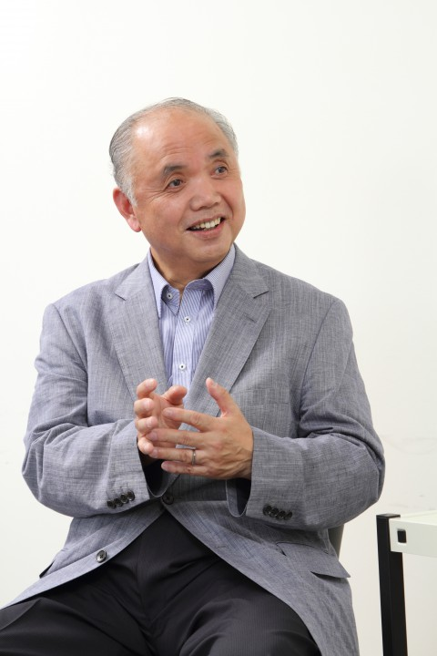
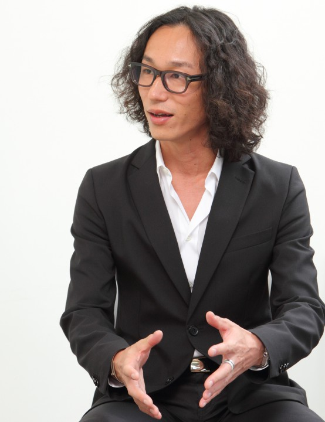

橘田正造 教授 ✕ 村上臣 ヤフー株式会社執行役員 対談
{kind=link}
アジア開発銀行等多くの国際機関での実務を経験してきた橘田教授と、青山学院大学OBとしてヤフー株式会社の執行役員を務める傍ら、Bharti Softbank（ソフトバンクとインド Bharti Airtelの合弁会社）とヤフーが設立したインド企業 “Ignite World” の取締役を務める村上臣氏が、リアルなアジアの状況と、これからの可能性について熱く語る対談の様子をお伝えします。
『若者がITにチャレンジしやすい環境がインドにはあります。優秀な人材も非常に多いです。』
橘田：私は80年代はアジア開発銀行にいて、上司はインド人でした。 その他、タイ、フィリピン、フランスなど、万遍なく行きました。 人材育成にどんなスピリットが必要かは、ある程度理解しておりますが、村上さんのお考えも伺いたいです。まず、今チャレンジされている事業についてお聞かせください。 
{kind=link}
村上：2009年ごろに孫正義氏がバルセロナで講演をした際、インドのエアテル社の会長から「その事業はすごい！」と言われ、ぜひ教えてくれと言われたのがきっかけです。 そこから、エアテル社とともに、「インド版ソフトバンク」のような持ち株会社を設立し、その下の事業子会社の取締役になりました。日本のモバイルインターネットのノウハウをインドに持ち込み、事業を展開しています。規制緩和などがこれから起こると予測されており、成長も期待できると思われます。
橘田：デリーでの雇用はどれくらい創出していますか？
村上：現在は160名くらいの規模になっています。
橘田：インドでITが伸びている理由はどこにあるのでしょうか？
村上：若者のスタートアップ環境が非常に良いのが要因ですね。チャレンジスピリットも大きい。欧米の投資家（エンジェル）が資金を投入しているのも大きい。若者がITにチャレンジしやすい環境がインドにはあります。優秀な人材も非常に多いです。
橘田：日本人の80％近くがインド嫌いになってしまうと言われていますが、嫌いにはなりませんでしたか？
村上：そういった話を聞いたことはありますが、僕だけがお腹を壊すこともなくて…どうやらインドが合うみたいです。
『青学はアグレッシブな学生が多いイメージ。』
橘田：そもそもこういった仕事に興味をもったきっかけは？
村上：もともとプログラミングが好きで、アルバイトなどもそれに関連したものをやっていました。インターネットがブームになった際に魅力を感じ、学内では毎日パソコン室にいました。その時一緒にいたのが川邊健太郎氏（青山学院大学出身、現・ヤフー副社長）。彼は仕事を取ってくる役で、僕がプログラミングやウェブサイト作りをしていました。
橘田：その時のエンジェルは？
村上：当時は手銭でした。ファイナンスという概念もなかったので。
橘田：当時、その若さで起業するというのはなかなか珍しいものですよね。
村上：たしかに、まだまだ当時は少なく、学生ベンチャーのはしりのような存在でした。
橘田：飛躍するきっかけというのは？
村上：もともと受託の会社だったのですが、ケータイでインターネットが出来る時期がやってきた97年ごろ、アメリカのシリコンバレーでAT&Tが持っていたものを実際に見て、モノクロ画面でもブラウザが動いていることに衝撃を受けました。それが日本のIDOとDDI（現在のKDDI）に採用されることが決まり、そこで受託の仕事からケータイ関連の仕事に切り替え、大きく飛躍していったのです。
橘田：私自身も最初は日本やタイでの仕事の経験しかなかったのですが 、そのほかの国、宗教の人々とぶつかり合うたびに怖くない、という自信につながっていきました。今思うと、マルチな国々でチャレンジしてきたことが大きいのかなと思います。
村上：アメリカなどは起業家に対してフレンドリーな企業が多いですね。ほんの数分でも会ってくれます。
橘田： 多国籍なのも大きいですね。
村上： 今はFacebookなどで情報収集し、飛び込みで来る学生が多くなってきましたね。でもそういった人とは少しでも話を聞こうとしています。
橘田： 青学生でも村上さんの後を追うような学生もいますか？
村上： 時々いますね。川邊のもとにもよく相談が来るようです。青学の学生も何名も相談に来ていますが、アグレッシブな学生が多いイメージです。
橘田： この秋から青学出身で世界で活躍する人に話をしてもらう授業「世界の青学」を担当する予定でいますが、今までのご経験を伺うとぜひ来ていただきたいくらいです。
村上： 機会をいただければぜひ（笑）
『年代、国籍、文化、宗教の違う人と交わることでさらに成長できる』

橘田： 村上さんからみて、グローバルに活躍することを目指している青学生に向けて、メッセージがあれば。
村上： まず何をしたいか、課題を見つけることですよね。そこが一番重要だと思います。ビジネスの世界でも、留学していました、英語話せます、MBAあります…といった人は山ほどいる。そんな中でどんな世の中にしたいのか、というのを見据えることが必要だと思います。 あとは、いろいろな国を見て、環境を変えてみるのもいいかもしれないですね。東南アジアは面白い国がたくさんあるので。
橘田： その課題を見つけることについてですが、具体的に村上さんは何をされましたか？
村上：僕はいろいろなバイトをしていました。コンビニや、コンサートのバイト、ケータリング、秋葉原でのバイト…さまざまなバイトをしていたことが良い経験になっています。特にコンサートのバイトなんかは現場の裏側が色々と見えたりもしたので、それが今にも活きているのかなと思います。秋葉原でも商品の仕入れを担当していたので、毎日これいくらで売れるんだろう…なんてことを考えながら仕事をしていました。
橘田： 今おっしゃったような若いときの経験が非常に大事になりますね。
村上： 色々な人と付き合うというのは非常に大事ですよね。年代、国籍、文化、宗教の違う人なんかと交わることでさらに成長できるのではないかと思います。
橘田： 現在インドで携わっている会社のCEOはやはりインド人？
村上： インド人ですね。主要なマネジメントもインド人です。日本人は少数派ですね。
橘田： 東南アジアでも仕事をされているとおっしゃっていましたが、宗教的・文化的な違いなどから感じることはありますか？
村上： そこは慣れでしょうね。そういうところが自然と気遣えるようになると馴染んだ感じがしますよね。
橘田： そういう文化の違いがあっても、お互いをリスペクトするという気持ちが大事ですね。 さて、地球社会共生学部では少し変わった留学システムを考えていて、タイやマレーシアといった東南アジアへの留学を必須としています。
村上： 素晴らしいですね。マレーシアなんかは特に今はいいですね。国がコンパクトにまとまっていて、多宗教・多民族にも触れられますから。
『英語のメディアをたくさん読むクセをつけておくと知識の量が圧倒的に増える。』
インタビュアー： 新学部を目指す学生が身につけておく能力はありますか？
村上：アジアに特化して、というわけではないですが、いったん向こうの文化を受け止めるオープンさが必要だと思いますね。もちろん日本の文化も勉強しておく必要があります。それから、一つの物事に対して複数の見方をインプットすることが大事だと思います。それが教養なのだと思いますね。 あと、英語のメディアをたくさん読むクセをつけておくと知識の量が圧倒的に増えると思います。
橘田： 私も授業ではなるべく英語を使っています。そういったものにできるだけ触れてもらうというのが非常に大事だと思いますね。 インタビュアー： 情報のインプットの話が出ましたが、自分なりの取捨選択は難しいですよね？
村上： とりあえず、目についたものは片っ端から読むくらいでいいんじゃないでしょうかね。 学生は自由に使える時間がたくさんありますから。
橘田： 学生本人たちはそれに気づいていないんですけどね（笑）
村上：大学生って、時間が全部「自分の時間」なんですよね。それができるのは大学生だけですから。社会に出たら、仕事のために使う時間が出てきてしまうので（笑）
『自分で体験して、これは本物かを確かめることが大事。』
インタビュアー： 村上さんの今注目されている国はどこですか？
村上： 東南アジアは全域ですね。中でもインドネシアとインドです。インドネシアは、GDPの伸びしろが大きいことにくわえ、首都であるジャカルタが栄えています。
橘田： インドネシアの人口は2億人ですからね。
インタビュアー： 次にこんなプロジェクトを展開したいというのはありますか？
村上： やはりスマートフォンを使った事業を展開していくことになると思います。特に物流にかかわる事業は注目していますね。東南アジアは物流が弱いところがあるので、それをカバーできるようなことをしてみたいです。
インタビュアー： 村上さんの座右の銘のような、軸になるものを教えていただけますか？
村上： 「おもしろき こともなき世を おもしろく」ですかね。物の見方次第でどうとでもなる、一度飛び込んでみるということが大事。先入観を排除することと、自分なりの見立てを持てるか、というところです。 あれだけ普及したiPhoneだって最初は日本では売れないと言われていたんです。あの時にダメだと言ったジャーナリストを全部並べたいくらいです（笑） 僕はあのときアメリカに行って実際にiPhoneを買ったんですが、その機能を見て間違いなく来ると思いました。見て、自分で体験して、これは本物かを確かめることが大事ですね。もちろんハズレもありますが。とにかく、うだうだ言わずに一度やってみることが必要だと思います。
インタビュアー： 新学部を目指すみなさんへメッセージをお願いします。
村上：こういうコンセプトを持った学部は日本では相当珍しいですよね。自分が学部を創ることが出来るのは大きい。少しでも共感したら飛び込んでみてほしいです。アジアには必ず伸びしろはありますから！